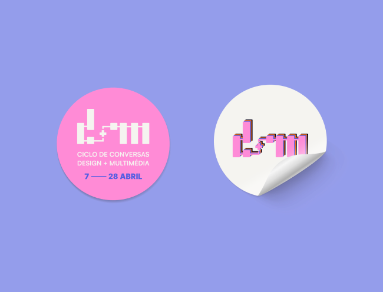

JUNE 2022
CICLO DE CONVERSAS -
DESIGN + MULTIMÉDIA
Projeto desenvolvido individualmente, num contexto de experimentação, baseado no enunciado da cadeira Projeto 1. O trabalho tinha como objetivo a criação de uma identidade visual para o evento “Ciclo de Conversas - Design + Multimédia”. Este ciclo de conferências realiza-se no âmbito da Licenciatura e Mestrado em Design e Multimédia da Universidade de Coimbra, juntando diferentes profissionais reconhecidos na área do Design.
